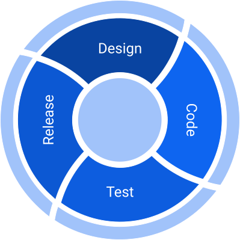

Lesson 11 - Software Development Life Cycle
At the end of this lesson, you will be able to:
- Explain the steps of the software development life cycle.
Software Development Life Cycle

As you learned in the last unit, programs must be designed before they are written. Software is usually developed using a process called the Software Development Life Cycle:- Design the program algorithm
- Code and correct syntax errors
- Test the program and correct logic errors (called debugging)
- Release your finished product
This is usually done using an iterative model. The process starts with a simple implementation of a small set of the software requirements and iteratively enhances the evolving versions until the complete system is implemented and ready to be deployed.
Design
There are two steps in designing a program:
- Learning what the customer wants. Start with the UX (user experience) - so you can design with the end in mind. We will call this the sample run. Look at the sample run below for a simple pay calculator program. Notice I have entered sample input values of 40 and 15 and then calculate the correct answer. I can use this sample run to test my program for correctness when I am done coding.
Welcome to the Pay Program!
Enter the number of hours: 40Enter the hourly pay rate: $15 The gross pay is $600.00END.
- Understand the tasks the program is to perform. Determine the steps that must be taken to perform the task and then create an algorithm, or step-by-step directions to solve the problem. Use pseudocode to solve. Don’t skip this step! Plan out the logic on paper, whiteboard, or as comments in your program.
Pseudocode is fake code used as a model for programs. There are no syntax rules. Well-written pseudocode can be easily translated to actual code. Answer these questions to help you during the algorithm design. You must have numbered step-by-step unambiguous (clear) instructions to solve the problem.
- Identify the user input. How many different inputs do you need?
- What data types do you need for the inputs? List them.
- What calculations do you need to do to transform inputs into outputs? List all formulas needed, if they are applicable. If there are no calculations needed, state there are no calculations for this algorithm.
- Describe the process needed to transform inputs to outputs using numbered steps. Here is where you would use conditionals, loops, functions, or array constructs (if applicable) and explain the process of transforming inputs into outputs.
- Describe the program output. What output variables are needed? What data types for the output variables? What is displayed to the user?
After you have planned out your program, you are ready to code! Planning first saves you time by thinking through your logic in an informal manner, without worrying about specific syntax.
Code
After you have planned out your program, you are ready to code! Now you can take your algorithm and convert it into a language the computer can understand, Python. If you make mistakes when typing up your program, these are called syntax errors and the Python interpreter will complain when you try and run your program. Keep fixing your syntax errors until the program runs.
Test
You are not finished! Now you must test your program to see if it works correctly. Start by using the sample input data from your sample run. Are the results the same? If not, you have a logic error, and you will need to look through your code to find the error. This process is called debugging.
Release
Now that your program has been tested for logic errors you are ready to release. Congratulations!